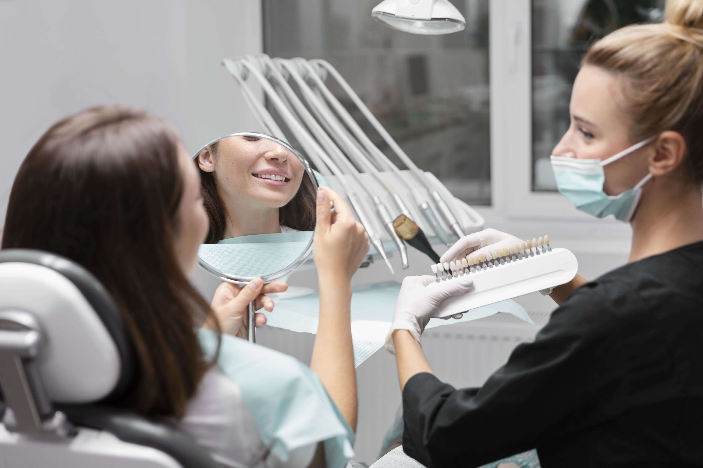
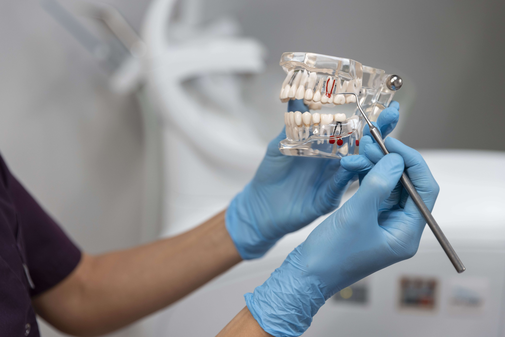
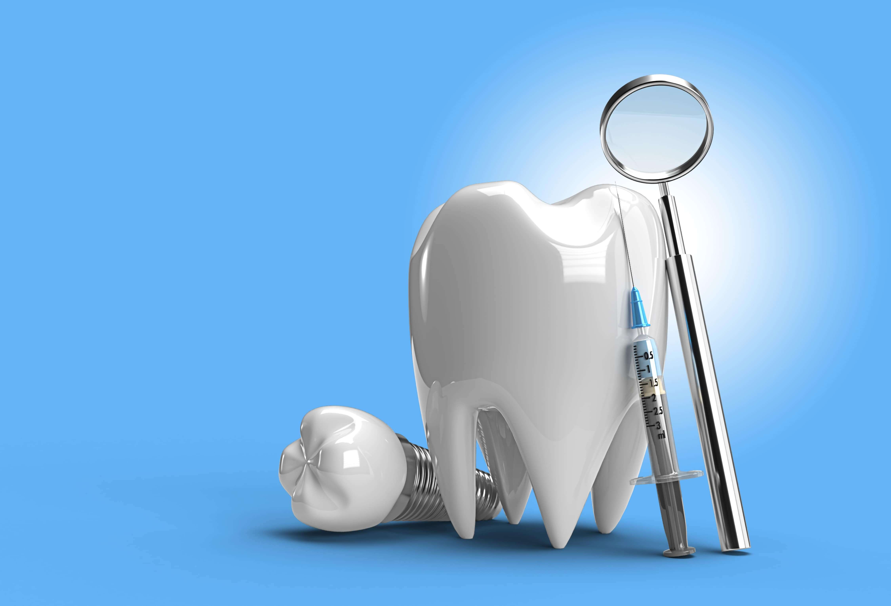
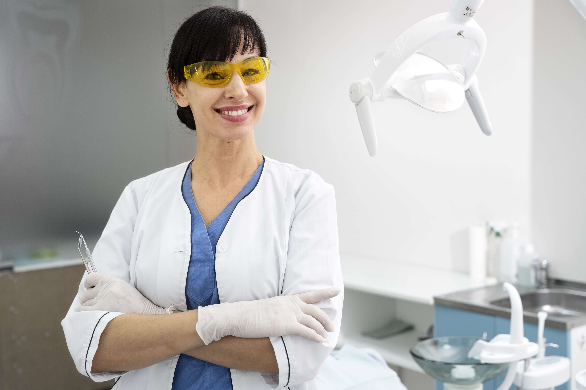

Restoratif Diş Tedavisi

Restoratif diş tedavisi, Diş çürüğü gibi diş sert dokularını ilgilendiren hastalıklar ile ilgili risk analizlerinin ve koruyucu yaklaşımlarının yanı sıra, bu hastalıkların erken tesbiti ve tedavilerini gerçekleştirerek hastalara kaybettikleri dental sağlık ve estetiklerini yeniden kazandırmayı amaçlayan, çeşitli etkenler sonucu oluşan madde kayıplarını ve hastanın mevcut estetik problemlerini cerrahi işlem uygulanmadan gerçekleştiren bilim dalıdır.
Detayları Bilgi
Ağız Diş ve Çene Cerrahisi

Çene estetiği (ortognatik cerrahi, genioplasti), çene kırıkları, çene kistleri, çene eklemi sorunları, uyku apnesi, implant tedavisi, gömülü diş çekimi ve kemik güçlendirme işlemleri gibi pek çok tedavi alanını kapsayan ana bilim dalıdır.
Detayları Bilgi
Ağız Diş ve Çene Radyolojisi

Ağız içi ve ağız dışı görüntülemeler yardımı ile tanı ve en uygun tedavi planlamasının yapıldığı ana bilim dalıdır.
Ağız, Diş ve Çene Radyolojisi Birimimizde Uygulanan Tetkikler
- Ağız İçi Dijital Radyografi
- Panoramik Radyografi (tüm ağız yapısının görüntüsü)
- Dental Bilgisayarlı Tomografi (CBCT)
Detayları Bilgi
Periodontoloji

Periodontoloji, diş etleri ve dişi çevreleyen dokuları bu dokularda meydana gelen hastalıkların teşhisi, tedavisi ve tedavi sonrasında elde edilen sağlığın korunmasını amaçlayan bir diş hekimliği dalıdır. Periodontal hastalıklar diş eti ve dişleri destekleyen diğer dokuları etkileyen iltihabi hastalıklardır. Diş etlerinde kanama en belirgin bulgusu olmakla birlikte diş kayıplarının önemli nedenlerinden biridir. Bu hastalıklar erken dönemde teşhis edildiklerinde kolay ve başarılı bir şekilde tedavi edilebilirler. Periodontal tedaviler, doğal dişlerin korunması yanında, daha rahat çiğnemenin ve daha iyi bir sindirimin sağlanması gibi diğer faydaları da beraberinde getirir.
Detaylı Bilgi
Dt. Ahmet Şenses
Dt. Ahmet Şenses, İstanbul Üniversitesi Diş Hekimliği Fakültesi’nden mezun olmuş, ağız, diş ve çene sağlığı alanında uzmanlaşmış bir hekimdir. Özellikle estetik diş hekimliği, implantoloji ve gülüş tasarımı üzerine çalışmalarıyla tanınan Şenses, mesleki kariyerinde hasta memnuniyetini ve etik değerleri ön planda tutmaktadır. Körfez Diş Hastanesi bünyesinde görev yapan Şenses, güncel tedavi yöntemlerini yakından takip ederek hastalarına modern ve güvenilir çözümler sunmaktadır.
Detaylı Bilgi

Dt. Gülsüm Şanses
Dt. Gülsüm Şanses, Ege Üniversitesi Diş Hekimliği Fakültesi’nden mezun olmuş, çocuk ve yetişkin diş sağlığı alanında geniş deneyim kazanmış bir diş hekimidir. Özellikle pedodonti, ortodonti ve koruyucu diş hekimliği üzerine çalışmalarıyla öne çıkan Şanses, hastalarıyla güçlü bir iletişim kurarak tedavi süreçlerini konforlu hale getirmeyi amaçlamaktadır. Körfez Diş Hastanesi ekibinde görev yapan Şanses, çağdaş tedavi yöntemlerini uygulayarak her yaş grubundan hastasına sağlıklı ve estetik gülüşler kazandırmayı hedeflemektedir.
Detaylı Bilgi
Selen Yılmaz
Ahmet Bey alanında çok yetkin birisi. Güler yüzlü ve pozitif yaklaşımı harika. Dişlerinizi ona emanet edebilirsiniz.
Mehmet Kamil Poyraz
Ağrıdan ölmek üzereydim. Gülsüm hanım hemen müdahele etti ve beni bu dertten kurtardı. Allah düşmanımın başına böyle bir ağrı vermesin.
Süleyman Çakır
Ahmet abiye teşekkürler. Şipşak foto çeker gibi ağrıyan dişimi çekti. Çekilen dişin yerine implant yapılacak ama fatura umarım kabarık gelmez ahmet abi :D sevgiler...